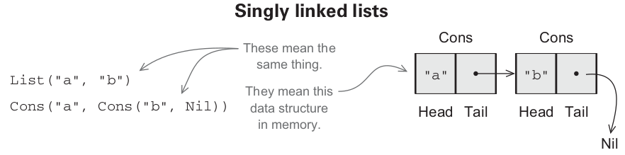
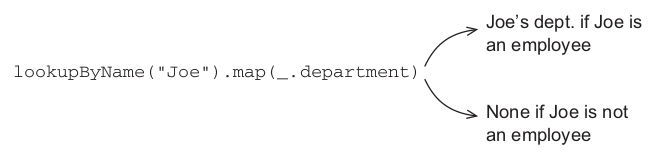
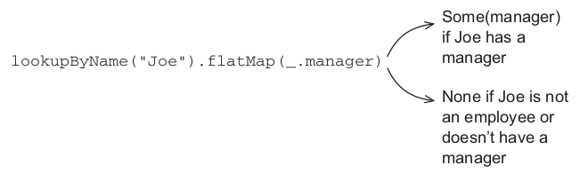
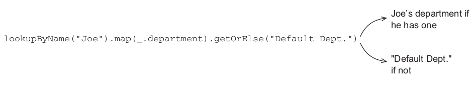

FP in Scala
Chapters 3 & 4
Yay.
See ...
def ...(name: String, n: Int, f: Int => Int): String
Parametricity + fast and loose reasoning, woo!
... and this one
def ...[A](as: Array[A], f: (A,A) => Boolean): Boolean
Definition
- Operated on with pure functions
- Pure functions on functional data structures can't perform side effects
- Mutation can happen, but it'll never escape.
- By definition, functional data structures are immutable
Venerable Singly Linked List
package fpinscala.datastructures
sealed trait List[+A]
case object Nil extends List[Nothing]
case class Cons[+A](head: A, tail: List[A]) extends List[A]
How does it work?
Thanks to polymorphism, we can do this:
val ex1: List[Double] = Nil
val ex2: List[Int] = Cons(1, Nil)
val ex3: List[List[String]] = Cons(Cons("A",Nil), Cons("B", Cons("C", Nil)))
Time & State
- Functional Data Structures often have a constructor for each possible state.
- But that state cannot change without explicit action, yay immutablility.
sealed trait Tree[+A]
case object Empty extends Tree[Nothing]
case class Leaf[A](a: A) extends Tree[A]
case class Branch[A](l: Tree[A], r: Tree[A]) extends Tree[A]
Thinking & Seeing
- What do such properties provide?
- We only have to worry about a single state at a time.
- We can explicitly express an interest in the state of a structure through pattern matching.
- Explicit statements and immutability provide greater room for optimisations.
Pattern Matching
def sum(ints: List[Int]): Int = ints match { case Nil => 0 case Cons(x,xs) => x + sum(xs)}Say what now?
sum(Cons(1, Cons(2, Cons(3, Nil))))1 + sum(Cons(2, Cons(3, Nil)))1 + 2 + sum(Cons(3, Nil))1 + 2 + 3 + sum(Nil)1 + 2 + 3 + 06Powerful Patterns - c/o Erlang
case Segment of
<< SourcePort:16, DestinationPort:16,
SequenceNumber:32,
AckNumber:32,
DataOffset:4, _Reserved:4, Flags:8, WindowSize:16,
Checksum:16, UrgentPointer:16,
Payload/binary>> when DataOffset > 4
-> ...
Data Sharing
That's nice... but how am I supposed to use data I cannot change?
Easy! Make a new one!!
OMG! No wonder you FP weenies love garbage collection...

Simplicity

For example....
def map[A,B](xs: List[A], f: A => B): List[B] = xs match { case Nil => Nil case Cons(h,t) => Cons(f(h), map(t, f)) }}Wat?
map(Cons(1,Cons(2,Cons(3,Nil))), (n : Int => n + 1))Cons( 1 + 1, map(Cons(2,Cons(3,Nil)), (n : Int => n + 1)))Cons( 2, Cons( 2 + 1, map(Cons(3,Nil), (n : Int => n + 1))))Cons( 2, Cons( 3, Cons( 3 + 1, map(Nil, (n : Int => n + 1)))))Cons( 2, Cons( 3, Cons( 4, Nil )))However...
map[A,B]( xs: List[A], f: A => B): List[B]
val l = List(1,2,3,4,5)
map(l, ( x => x + 1) )
error: missing parameter type for expanded function
((x$1) => x$1.$plus(1))
Improving Type Inference
map[A,B]( xs: List[A] )(f: A => B): List[B]
map( List(1,2,3) )( x => x + 1 )
List(2,3,4)
So much fun
- Okasaki - Purely Functional Data Structures (basically, kind of a big deal)
- Proved that these structures can be as, if not more, efficient than their mutable/non-functional counterparts
- Chapter is FULL of awesome exercises, hop to it.
Handling Errors without exceptions
Ermagerd. :D
Throwing exceptions, is a side effect.
What do we do instead?
Let's give that function a value. Functions love values.
Hrmmm?
def failingFn(i: Int): Int = {
val y:Int = throw new Exception("wup-wah")
try {
val x = 42 + 5
x + y
}
catch { case e: Exception => 43 }
}
Nuuuu!
mah referential transparency.
def failingFn2(i: Int): Int = {
try {
val x = 42 + 5
x + ((throw new Exception("fail!")): Int)
}
catch { case e: Exception => 43 }
}
“THAT'S NOT GOOD ENOUGH!!!”
-- George Wilson, 2015
def mean(xs: Seq[Double]): Double =
if (xs.isEmpty)
throw new ArithmeticException("mean of empty list!")
else xs.sum / xs.length
Problems...
- Allows errors to silenty propagate
- More boilerplate... leads to code like this:
(err, foo) := bar(wat) if err != nil { panic("oh noes") } (err, fuu) := fab(foo) if err != nil { panic("ermagerd!") } - Not usable with polymorphic code
Defaults!
def meanP(xs: Seq[Double], onEmpty: Double): Double =
if (xs.isEmpty) onEmpty
else xs.sum/ xs.length
“THAT'S STILL NOT GOOD ENOUGH!!!”
-- George Wilson, 2015
Option Type!
A type that explicitly states that a question may not have an answer
sealed trait Option[+A]
case object None extends Option[Nothing]
case class Some[+A](a: A) extends Option[A]Now we're cooking
def mean( xs: Seq[Double] ): Option[Double] = if (xs.isEmpty) None else Some(xs.sum / xs.length)“THAT MIGHT BE GOOD ENOUGH!!!”
-- George Wilson, unknown
possibly not even George.
Option Patterns
- Map lookup for a given key
- headOption / lastOption as defined for lists and other iterables.
Option Functions
Don't want to spoil the exercises for you
trait Option[+A] {
def map[B]( f: A => B ): Option[B]
def flatMap[B]( f: A => Option[B]): Option[B]
def getOrElse[B >: A]( default: => B): B
def orElse[B >: A]( ob: => Option[B]): Option[B]
def filter( f: A => Boolean): Option[A]
}
So lets do some together
def map[B](f: A => B): Option[B] = self match { case None => None case Some(a) => Some(f(a)) }More than one way...
def flatMap[B](f: A => Option[B]): Option[B] = self match { case None => ... case Some(a) => ... }Applied Option
Consider the following...
case class Employee(
name:String,
dept:String,
manager:Option[Employee]
)
def lookupByName( name:String ): Option[Employee]
Simple scenario, lookup
possibilities within possibilities
Possibilities with defaults...
Multiple Failures
- flatMap allows you to build computations with multiple points of failure
- By design it will abort as soon as the first failure is encountered.
None.flatMap(f) // will immediately return None.- Exercise 4.2 is a great example of this, that's why I'm not solving it for you. ;)
Don't be tempted by the dark side
o.getOrElse(throw new Exception("FAIL"))Higher Order Awesome
- Returning errors as values simplifies reasoning
- Can consolidate the error handling logic in generic functions
- Several computations can be performed at a time
- Error checking deferred until it's important
- The compiler helps us ensure coverage
for Comprehensions
The act of lifting functions is so common that Scala has some syntax sugar for helping out. Expands automatically into chained calls to 'flatMap'.
Recall the signature:
flatMap[B]( f: A => Option[B]): Option[B]
for {
e1 <- lookupByName(e1Name)
pet <- lookupPetsName(e1)
} yield pet.name
Either helpful option
- Option isn't our only tool for handling exceptions as values.
- 'None' doesn't tell us much.
- Wouldn't it be nice if we could provide some information about the failures?
Well Jim, it's a good thing you asked.
Presenting, the Either type:
sealed trait Either[+E, +A]
case class Left[+E](value: E) extends Either[E, Nothing]
case class Right[+A](value: A) extends Either[Nothing, A]
Wat
def mean(xs: Seq[Double]): Either[String, Double] =
if (xs.isEmpty)
Left("mean of an empty list")
else
Right(xs.sum / xs.length)
Can you spot a possible problem here?
More Higher Order Awesome
You can map and flatMap Either values.
Either can be used in 'for' comprehensions
case class Person(name: Name, age: Age)
sealed class Name(val value: String)
sealed class Age(val value: Int)
def mkName(n:String): Either[String,Name] = ...
def mkAge(a:Int): Either[String,Age] = ...
def mkPerson(name:String, age:Int): Either[String, Person] =
for {
n <- mkName(name)
a <- mkAge(age)
} yield Person(n,a)
Conclusion
- We covered some of the problems with exceptions.
- Explained the basic principles of purely functional error handling
- Option and Either types are just the beginning
- Errors as values and HOFs encapsulate common patterns for errors
- Effects as values is something that is covered many times in the book